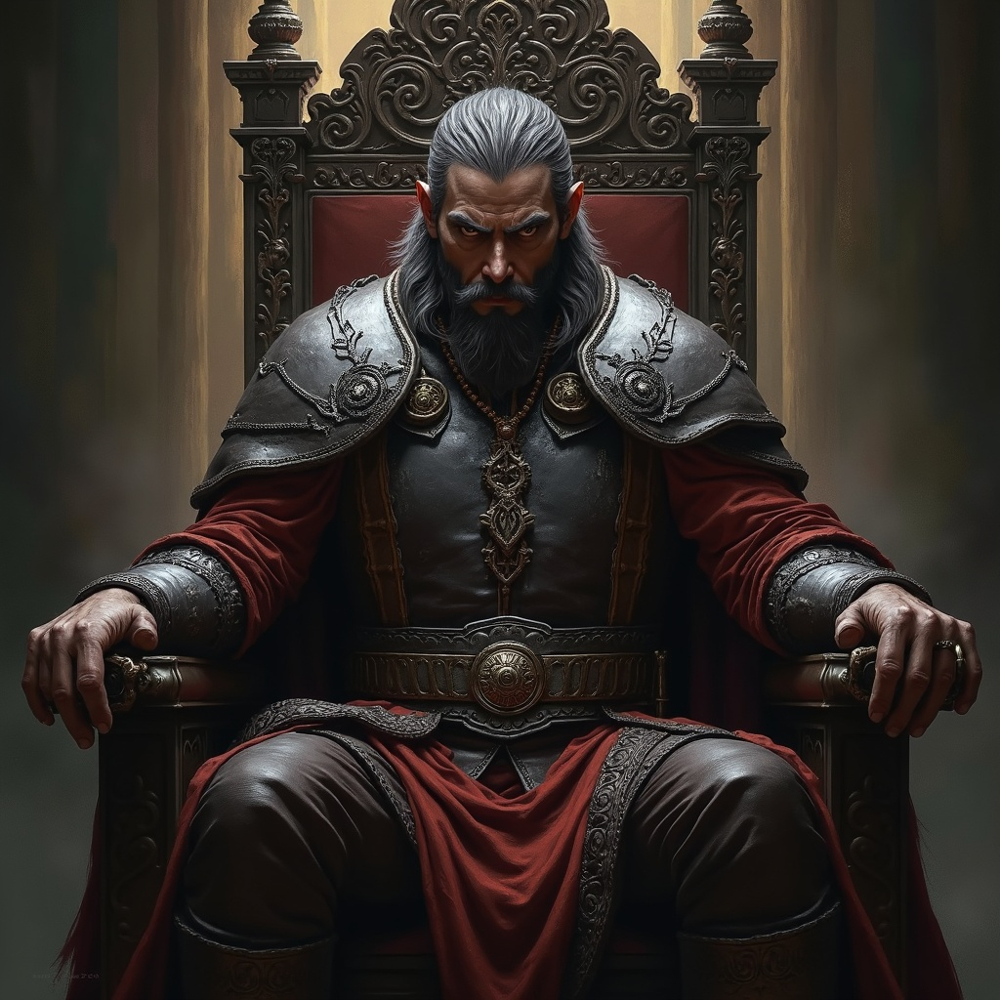

Overview
In Skazka, the line between hero and villain is a blade in fog. Power wakes under cursed skies, and those
who earn a name do so in darkness and at a price. Here you’ll meet the figures who shaped its
blood-stitched history—puppeteers and pawns, saviors and the damned. Choose allies carefully: in Skazka,
today’s hero may be tomorrow’s nightmare.
King Theldon
The wild boar, as he is known, became King of Nav'golam upon his father's death 658. He is best known for
locking the gates to the city at the start of the Shadow War in the year 700 and refusing to allow
admitance to outsiders for 101 years.
“Let the world break on our walls — we are the tusk.”
Ilistran Darkweaver
Ilistran Darkweaver rose to prominence as the enigmatic leader of the Order of the Word, one of Skazka's
most powerful mage guilds. A master of chaos magic, Darkweaver possessed an insatiable hunger for power
that extended far beyond the traditional bounds of arcane study. Unlike his peers who viewed magic as a
tool for knowledge and protection, Ilistran believed that those who wielded such extraordinary abilities
had not only the right but the duty to rule over the mundane world. His charismatic leadership and
formidable magical prowess initially drew many followers to his cause, as he promised a new age where
mages would emerge from the shadows to claim their rightful place as the world's masters.
However, Darkweaver's radical vision ultimately fractured the very guild he led. When other members of
the Order of the Word recognized the dangerous extremes of his ambition, they rose in rebellion against
their former leader, sparking the devastating conflict known as the Shadow War.
"They say that the abyss is empty. But it is not. I have looked into its eyes and saw myself
staring back."
High Witch Serona
High Witch Serona stands at the pinnacle of Ku’Than’s arcane order—once a warm, steady hand guiding her
sisters through peril and intrigue, now a figure both revered and feared. Her turning point was the
murder of her husband, Markus, by the Black Oak cult festering in the Weird Wood. Grief splintered her
life and cooled her ties to her daughter, Solryn—now a Guardian of the Third Eye. They speak rarely, and
always at a distance. A stark white streak in Serona’s black hair is said to mark the wound no healing
can touch.
Secluded for long stretches, she’s trailed by rumor: that her chambers hold voices not of the living;
that she bargains with the Weird Wood’s shades; that power and sorrow have driven her near the edge. Yet
when she steps from solitude, her presence still stills a hall—judgment sharp, authority unquestioned.
Serona now walks a dangerous threshold: leader bound to her people yet pulled deeper into occult
currents; grieving widow estranged from her heir; a witch whose communion with the dead may steady
Ku’Than—or tip its fate into shadow.
The Stranger
The Stranger is a mysterious individual who has appeared frequently throughout the history of Skazka.
In addition to eye witness testimony, he has been captured in both paintings and literature. He is viewed
as an angel of prophecy by some, allegedly having appeared at the site and time of various historical
events of note. He is seen as benevolent by some but a sign of impending tragedy by others.
Irrespective of lore and supersticion, he always appears dressed the same: in immauclately clean white
suits and carrying a notebook and quil. It is said that he appears and disappears in the blink of an
eye.
Maldrath the fire witch
Maldrath, a southern sorceress, came north with flame, cunning, and a charisma that bent even hard-bitten
hunters. Promising food, riches, and glory, she rallied fourscore adventurers for a doomed strike on the
dragon Icethorn.
To followers she was possibility incarnate; to rivals, a tangle of ambition and deceit. She led her host
across the River Horn, where victory soured: Glaclalis—Icethorn’s mate—was slain, and Grimspire fell
under a curse.
Her end is uncertain. Some say her spirit still burns in Winter’s halls, fire locked in ice. To many she
is a warning; to a few, an invitation to test ambition’s crucible.
"She came like summer fire to our frozen lives, all promises of gold and glory… and left nothing but
ashes. I still dream of her laughter, carried on the wind, and wonder how we ever followed a witch into
the teeth of a dragon."
— survivor of the Icethorn attack
Kul U Dran
Kul U Dran, chieftain of the Echo Tribe beneath Mount Echo west of Caratania, is to outsiders a cannibal
warlord; to his own, the Voice of Mekendo, mouthpiece of the fire god said to sleep in the volcano. His
word is law, indistinguishable from the deity’s.
Towering, scarred, and daubed in ash and blood, he serves as warrior-priest—casting enemy hearts into the
crater and reading Mekendo’s will in the roaring magma. His presence alone whips the Echo into
battle-frenzy.

King Alaric IV
King Alaric IV, mid-forties, is a living echo of Caratania’s forebears—so like the kings in the gallery
that courtiers swear he’s stepped from the portraits. Rarely seen, he’s rumored to move with a hawk’s
speed, a talent that sits between truth and legend. A fervent devotee of Aeter, he shapes policy by
prayer more than counsel, his piety deepening through a four-year seclusion that feeds uneasy whispers:
closer communion… or hidden malady?
Yet the banners still fly, decrees still bear his seal. Seen or unseen, Alaric remains Caratania’s quiet
heart—unchanged in visage, swift as a shadow, faithful beyond measure.
Arica Dreamforger
Arica Dreamforger—an elven psionic sorceress—led the faction that opposed Ilistran Darkweaver inside the
Order of the Word, a schism that sparked the Shadow War. Sharp-witted and resolute, she fought not for
dominion but to preserve balance and redeem a guild buckling under Ilistran’s ambition.
As Ilistran’s rifts widened, Arica marshaled a desperate defense. In the war’s last days, while sealing a
major Veil-tear, she was ambushed by Shadow-spawn and slain—brutally, far from any glory—while Ilistran
himself vanished.
Her name endures as a rallying cry against unchecked chaos. Even now, some swear her silhouette lingers
among broken stones at dusk—a dream woven into the memory of the world she tried to save.
Emperor Shemon Starr